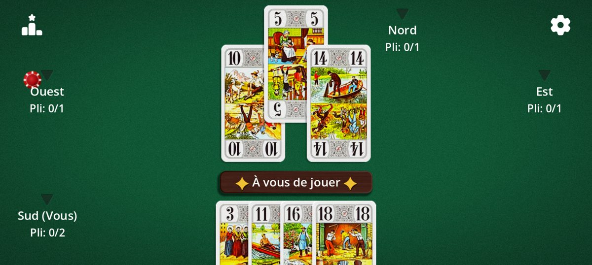

Les grands classiques des jeux de cartes, réinventés pour le mobile.
CardForgeStudio est un studio indépendant qui donne une seconde vie aux jeux de cartes traditionnels : règles fidèles, interface soignée, parties lancées en un geste.


Le studio
Spécialisé cartes
Tarot, jeux de plis, jeux d'annonces : nous nous concentrons sur les jeux de cartes classiques.
Pensé pour le tactile
Boutons larges, cartes lisibles sur tous les écrans, du smartphone à la tablette.
Vos règles, vos choix
Chaque jeu propose des variantes réglables pour jouer comme à la maison.
Un framework maison
Nos jeux reposent sur un framework de jeux de cartes développé sous Godot : de nouveaux titres arrivent.
Nos jeux
Tarot Africain
22 cartes, un pari à tenir : annoncez exactement le nombre de plis que vous allez remporter, ni plus, ni moins. Affrontez des bots, activez les variantes (mexicaine, à l'aveugle, double 20…) et tentez de rester le dernier en vie.

D'autres jeux de cartes classiques arrivent bientôt.
Prêt pour une partie ?
Le Tarot Africain est disponible sur Google Play.